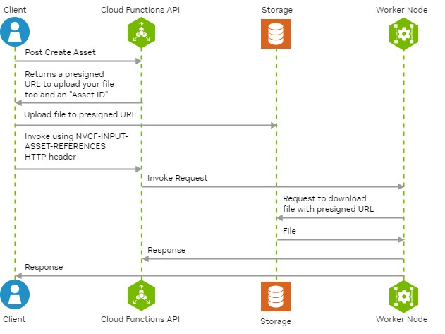

Asset Management
For image-to-image or inpainting based generation or inference, one has to start with one or more existing images as input to a model such as Stable Diffusion. Using NVCF’s Asset endpoints, customers can create an asset-id and corresponding pre-signed upload URL for each input image. The customer can then upload the existing images using their corresponding pre-signed URLs and specify the asset-ids when invoking the function. When the function is invoked with one or more asset-ids, NVCF creates a pre-signed download URLs and provides them to the Worker. The Worker uses these pre-signed download URLs to download the previously uploaded input images and copies them over to a fixed location on the filesystem. The customer’s container can then load these input images from that fixed location and use them during inferencing.
Pre-signed URLs provided by the NVCF Asset endpoint have a TTL of 1 hour. So, customers should use it to upload their input image before the TTL expires. These images or assets get deleted after 24 hours. There is a 5GB max limit on the size of each asset upload.
Instead of images, one can imagine that assets can be anything that one needs to use during a specific function invocation request. For example, an archive/zip can be an asset.
Creating an Asset ID and Pre-signed Upload URL
For each input file/image, a corresponding asset-id and pre-signed-upload-url can be created as shown below:
curl -X POST https://api.nvcf.nvidia.com/v2/nvcf/assets \
-H 'Authorization: Bearer <JWT Token>' \
-H 'accept: application/json' \
-H 'Content-Type: application/json' \
-d '{
"contentType": "image/png",
"description": "red-cat-photo"
}'
This should result in a response like this:
{
"assetId":"b5b841c3-11c2-4c34-b057-9475e82c5369",
"uploadUrl":"<pre-signed-upload-url>",
"contentType":"image/png",
"description":"red-cat-photo"
}
Uploading Assets to Cloud Storage
Once a pre-signed-upload-url is obtained, it can be used to upload the input file/image as shown below:
curl -X PUT -T my-image-file.png <pre-signed-URL> -H "Content-Type: image/png" -H "x-amz-meta-nvcf-asset-description: red-cat-photo"
Note
Ensure that contentType in the POST /v2/nvcf/assets request payload matches the Content-Type header in the curl command to upload the asset.
Similarly, make sure that the description in the POST /v2/nvcf/assets request payload matches the x-amz-meta-nvcf-asset-description header in the curl command used to upload the asset. Otherwise, you will see errors with the status code 400.
Listing Assets
You can get a list of asset-ids for your NVIDIA Cloud Account.
curl -X GET https://api.nvcf.nvidia.com/v2/nvcf/assets -H "Authorization: Bearer <JWT Token>"
Currently, this returns only 1000 asset-ids. If you have more than 1000 assets for your NVIDIA Cloud Account, you will not see all of them.
Deleting Assets
Assets have a default TTL of 24 hours. You can delete an asset sooner by using the delete asset API.
curl -X DELETE https://api.nvcf.nvidia.com/v2/nvcf/assets/{assetId} -H "Authorization: Bearer <JWT Token>"
Specifying Assets when invoking a Function
You can specify one or more asset-ids when invoking a function using NVCF-INPUT-ASSET-REFERENCES HTTP header like this:
curl -X https://api.nvcf.nvidia.com0/v2/nvcf/pexec/functions/<function-id> \
-H "Content-Type: application/json" \
-H "NVCF-INPUT-ASSET-REFERENCES: uuid-asset-id1, .." \ # Optional
-H "Authorization: Bearer $JWT" \
-d @- <<EOF
{
"opaque": "object" // Your inference payload
}
EOF
Using Assets with Custom Containers
When the customer container is invoked during function invocation, it can use the following HTTP headers to pick up the assets for the specific invocation:
NVCF-REQID: “<reqId from the message>”
NVCF-FUNCTION-ASSET-IDS: “<comma separated list of asset IDs>”
NVCF-ASSET-DIR: “<absolute path to the directory where all assets will be for the specific invocation request>”
The path to the assets will be in the request header: “NVCF-ASSET-DIR”.
The header “NVCF-FUNCTION-ASSET-IDS” contains a comma-separated list of the asset IDs, the same as the asset filenames. Use these IDs to construct the full path to the assets.
Example:
NVCF-REQID: b9223090-b7da-11ed-afa1-0242ac120002
NVCF-ASSET-DIR=/var/inf/inputAssets/b9223090-b7da-11ed-afa1-0242ac120002
NVCF-FUNCTION-ASSET-IDS=38652fac-b7ee-11ed-afa1-0242ac120002,386531f0-b7ee-11ed-afa1-0242ac120003
The two asset files would be:
/var/inf/inputAssets/b9223090-b7da-11ed-afa1-0242ac120002/38652fac-b7ee-11ed-afa1-0242ac120002
/var/inf/inputAssets/b9223090-b7da-11ed-afa1-0242ac120002/386531f0-b7ee-11ed-afa1-0242ac120003
Retrieving Asset Directory and Asset ID in Triton Python Backend
This section provides guidance on how to retrieve the asset directory and asset ID when using the Triton Python backend. This is particularly useful when dealing with asset management in custom containers and Functions.
Steps
Importing Helpers Module:
Utilize the helpers module available in the Triton Python backend. This module provides essential methods to retrieve asset paths.
from triton_python_backend_utils import helpers
Getting Asset Paths:
Use helpers.get_input_path() and helpers.get_output_path() methods to obtain the paths for the input and output assets, respectively.
input_path = helpers.get_input_path() output_path = helpers.get_output_path()
Accessing Asset ID:
The asset ID can be retrieved from the environment variable NVCF_ASSET_ID. This ID is important for referencing specific assets.
import os asset_id = os.environ.get('NVCF_ASSET_ID')
Server Configuration:
Ensure that the Triton server is started with the –http-header-forward-pattern NVCF-.* option. This configuration is necessary for forwarding asset-related HTTP headers to the backend.
tritonserver --http-header-forward-pattern NVCF-.*